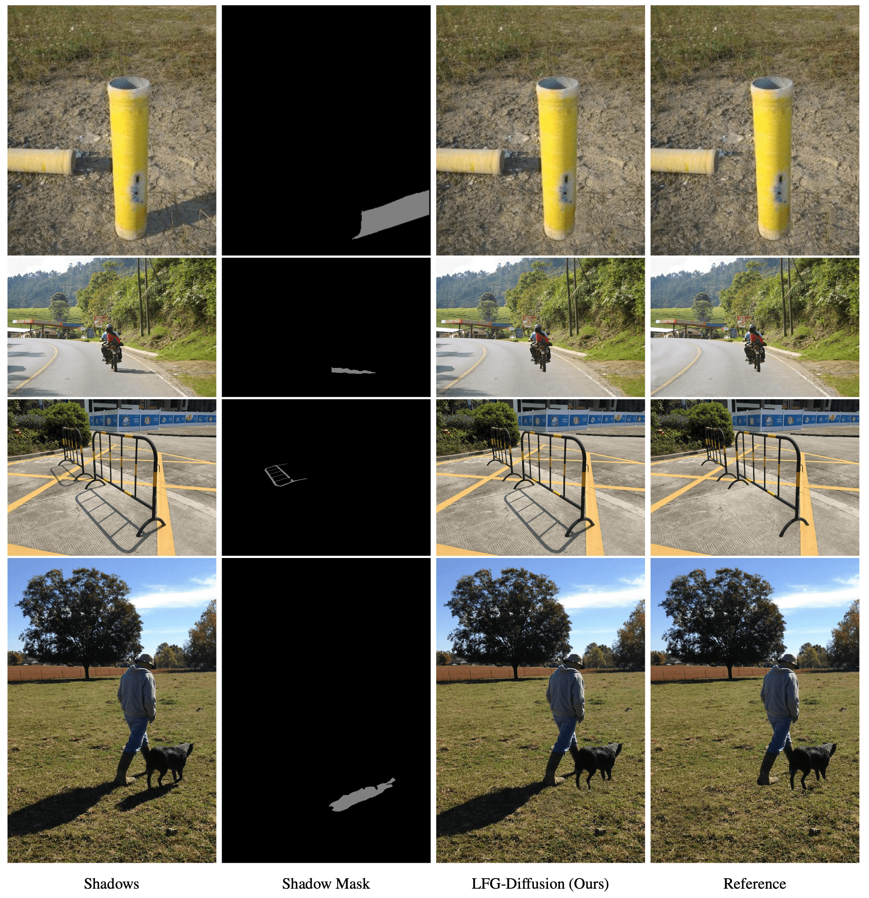

Latent Feature-Guided Diffusion Models for Shadow Removal
- Kangfu Mei
- Luis Figueroa
- Zhe Lin
- Zhihong Ding
- Scott Cohen
- Vishal M. Patel
- Johns Hopkins University
- Adobe Research
Abstract
Recovering textures under shadows has remained a challenging problem due to the difficulty of inferring shadow-free scenes from shadow images. In this paper, we propose the use of diffusion models as they offer a promising approach to gradually refine the details of shadow regions during the diffusion process. Our method improves this process by conditioning on a learned latent feature space that inherits the characteristics of shadow-free images, thus avoiding the limitation of conventional methods that condition on degraded images only. Additionally, we propose to alleviate potential local optima during training by fusing noise features with the diffusion network. We demonstrate the effectiveness of our approach which outperforms the previous best method by 13% in terms of RMSE on the AISTD dataset. Further, we explore instance-level shadow removal, where our model outperforms the previous best method by 82% in terms of RMSE on the DESOBA dataset.
Updates
- Dec-01-2023: We release the complete training and testing code. Take a try at [Code].
🔥 Instance-level Shadow Removal
We propose the first instance-level shadow removal model that can remove certain shadow while keeping the others. Previous methods usually failed at such challenge cases because they treate different shadows as whole.
Citation
Acknowledgements
The website template was borrowed from Mip-NeRF 360.